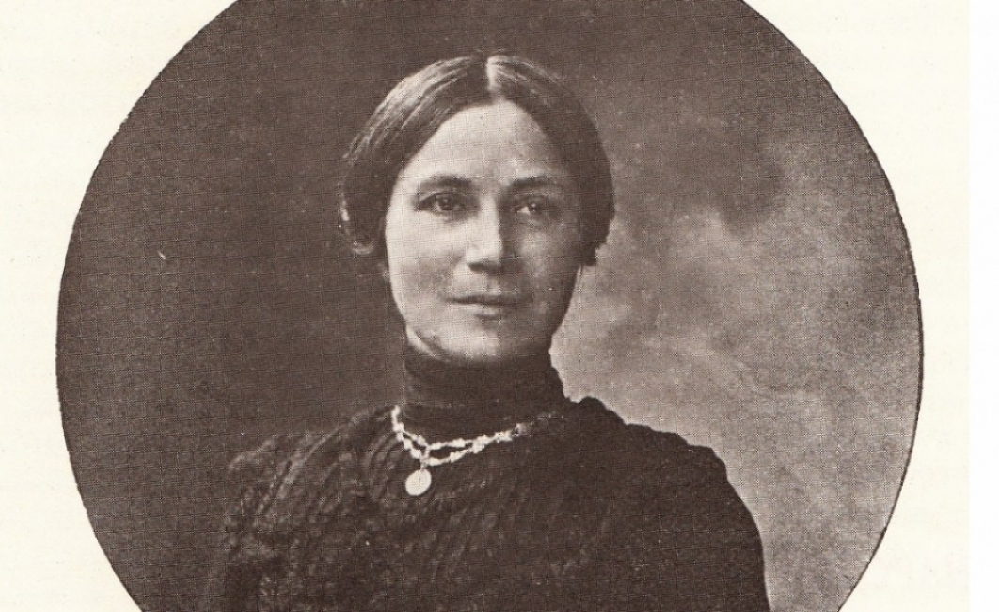

Екатерина Каравелова е родена на 21 октомври 1860 г. в Русчук, административен център на Дунавския вилает, в „болярската махала“ Вароша, като дъщеря на кожухаря Велико Пенев, преселил се от Арбанаси в крайдунавския град. Голяма роля за нейното бъдеще изиграва леля ѝ по бащина линия Кирияки Минкова, съпруга на известния русенски търговец Тодор Минков (вуйчо на Тодор Минков, собственик на Южнославянския пансион в град Николаев, Украйна). Тя се ползвала с авторитет сред русчушкото общество, финансирала благотворителното дружество „Добродетел“ и имала голямо влияние сред жените. Нейна е идеята да заведе 10-годишната Катя да учи в Русия. През 1870 г. Екатерина Пенева напуска Русчук и след кратък престой в Южнославянския пансион в Николаев и в Левашевския пансион в Киев, Тодор Минков я настанява в Москва, в дома на запасния генерал Всеволод Николаевич Лермонтов, чиято съпруга Елисавета Андреевна, родова аристократка от Петербург, е член на Славянското общество. Записват Катя в ІV Московска женска гимназия, която след осем години завършва със златен медал. Една от дъщерите на Лермонтови учи химия в Берлин и е приятелка на София Ковалевска, която учи математика. Бъдещата първа в света жена-професор (1884 г. в Стокхолмския университет) неведнъж гостува в московския дом на семейството и общува с Катя. На 3 август 1878 г. Катя напуска Москва и се отправя към България. На 12 август пристига в Русе, ненавършила 17 години. В края на септември младата учителка пригодява стая в дома си и взема няколко деца от различни възрасти да ги учи, разпределяйки ги в три класа – подготвителен, първи и втори клас. Преподава им всички предмети, като и руски, френски и немски. В края на учебната 1878/1879 г. Екатерина Пенева провежда изпит с учениците си, на който присъстват учители от Мъжката гимназия. Изпитът минава блестящо – въпреки лошия български език, широките познания на учителката и нейното старание са дали резултати. През втората учебна година, 1879/1880, Екатерина Пенева е назначена за главна учителка на девическите класове, помещаващи се в Мъжката гимназия.
| 1. | Тя допринася за създаването на Българския женски съюз. |
| 2. | Тя е една от създателките на Комитета за защита на евреите. |
| 3. | По време на Балканските войни (1912 – 1913) e главна медицинска сестра, грижи се и за ранените при Първата световна война. |
| 4. | През 1935 година е избрана за председател на Съюза на българските писатели. |